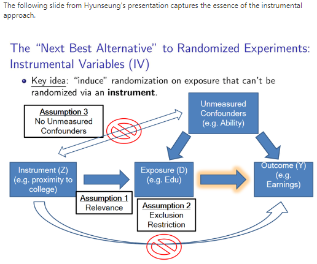

Understanding Instrumental Variables
IVs
Introduction
Instrumental variables (IVs) are used to control for confounding and measurement error in observational studies. They allow for the possibility of making causal inferences with observational data. Like propensity scores, IVs can adjust for both observed and unobserved confounding effects. Other methods of adjusting for confounding effects, which include stratification, matching and multiple regression methods, can only adjust for observed confounders. IVs have primarily been used in economics research, but have recently begun to appear in epidemiological studies.
Observational studies are often implemented as a substitute for or complement to clinical trials, although clinical trials are the gold standard for making causal inference. The main concern with using observational data to make causal inferences is that an individual may be more likely to receive a treatment because that individual has one or more co-morbid conditions. The outcome may be influenced by the fact that some individuals received the treatment because of their personal or health characteristics.
Consider the linear regression model:
\[ y_i = b_0 + b_1X_{1i} + b_2X_{2i} + ... + b_kX_{ki} + u_i \]
where \(y_i\) is the outcome for the ith individual; \(X_{mi}\) is the m-th explanatory variable (m=1,…,k) for the i-th individual; \(b_m\) is the parameter associated with the m-th explanatory variable; \(u_i\) is the random error term for the i-th individual.
Let Z denote a randomization assignment indicator variable in this regression model, such that Z=1 when a treatment is received and Z=0 when the control or placebo is received, and let \(X_1\) be the treatment. Z is referred to as the instrumental variable because it satisfies the following conditions: (i) Z has a causal effect on X; (ii) Z affects the outcome variable Y only through X (Z does not have a direct influence on Y which is referred to as the exclusion restriction); (iii) There is no confounding for the effect of Z on Y.

There are two main criteria for defining an IV: (i) It causes variation in the treatment variable; (ii) It does not have a direct effect on the outcome variable, only indirectly through the treatment variable.
A reliable implementation of an IV must satisfy these two criteria and utilize a sufficient sample size to allow for reasonable estimation of the treatment effect. If the second assumption is not satisfied, implying that the IV is associated with the outcome, then estimation of the IV effect may be biased. If the first assumption is not satisfied, implying that the IV does not affect the treatment variable then the random error will tend to have the same effect as the treatment. When selecting an IV, one must ensure that it only affects whether or not the treatment is received and is not associated with the outcome variable.
Although IVs can control for confounding and measurement error in observational studies, they have some limitations. We must be careful when dealing with many confounders and also if the correlation between the IV and the exposure variables is small. Both weak instruments and confounders produce large standard error which results in imprecise and biased results. Even when the two key assumptions are satisfied and the sample size is large, IVs cannot be used as a subsitute for the use of clinical trials to make causal inference, although they are often useful in answering questions that an observational study can not. In general, instrumental variables are most suitable for studies in which there are only moderate to small confounding effects. They are least useful when there are strong confounding effects.
Instrumental Variables: A Brief Annotated Bibliography
Economics nobelprize.org
Most applied science is concerned with uncovering causal relationships. In many fields, randomized controlled trials (RCTs) are considered the gold standard for achieving this. The systematic use of RCTs to study causal relationships — assessing the efficacy of a medical treatment for example — has resulted in tremendous welfare gains in society. However, due to financial, ethical, or practical constraints, many important questions — particularly in the social sciences — cannot be studied using a controlled randomized experiment. For example, what is the impact of school closures on student learning and the spread of the COVID-19 virus? What is the impact of low-skilled immigration on employment and wages? How do institutions affect economic development? How does the imposition of a minimum wage affect employment? In answering these types of questions, researchers must rely on observational data, i.e., data generated without controlled experimental variation. But with observational data, a fundamental identification problem arises: the underlying cause of any correlation remains unclear. If we observe that minimum wages and unemployment correlate, is this because a minimum wage causes unemployment? Or because unemployment and lower wage growth at the bottom of the wage distribution leads to the introduction of a minimum wage? Or because of a myriad of other factors that affect both unemployment and the decision to introduce a minimum wage? Moreover, in many settings, randomized variation by itself is not sufficient for identification of an average treatment effect.
This year’s (2021) Prize in Economic Sciences rewards three scholars: David Card of the University of California, Berkeley, Joshua Angrist of Massachusetts Institute of Technology, and Guido Imbens of Stanford University. The Laureates’ contributions are separate but complementary. Starting with a series of paper from the early 1990s, David Card began to analyze a number of core questions in labor economics using “natural experiments”, i.e., a study design in which the units of analysis are exposed to as good as random variation caused by nature, institutions, or policy changes. These initial studies — on the minimum wage, on the impact of immigration, and on education policy — challenged conventional wisdom, and were also the starting point of an iterative process of replications, new empirical studies, and theoretical work, with Card remaining a core contributor. Thanks to this work, we have gained a much deeper understanding of how labor markets operate.
In the mid-1990s, Joshua Angrist and Guido Imbens made fundamental contributions to the challenge of estimating an average treatment effect. In particular, they analyzed the realistic scenario when individuals are affected differently by the treatment and choose whether to comply with the assignment generated by the natural experiment. Angrist and Imbens showed that even in this general setting it is possible to estimate a well-defined treatment effect — the local average treatment effect (LATE) — under a set of minimal (and in many cases empirically plausible) conditions. In deriving their key results, they merged the instrumental variables (IV) framework, common in economics, with the potential-outcomes framework for causal inference, common in statistics. Within this framework, they clarified the core identifying assumptions in a causal design and provided a transparent way of investigating the sensitivity to violations of these assumptions. The combined contribution of the Laureates, however, is larger than the sum of the individual parts. Card’s studies from the early 1990s showcased the power of exploiting natural experiments to uncover causal effects in important domains. This early work thus played a crucial role in shifting the focus in empirical research using observational data towards relying on quasiexperimental variation to establish causal effects. The framework developed by Angrist and Imbens, in turn, significantly altered how researchers approach empirical questions using data generated from either natural experiments or randomized experiments with incomplete compliance to the assigned treatment. At the core, the LATE interpretation clarifies what can and cannot be learned from such experiments. Taken together, therefore, the Laureates’ contributions have played a central role in establishing the so-called design-based approach in economics. This approach – aimed at emulating a randomized experiment to answer a causal question using observational data – has transformed applied work and improved researchers’ ability to answer causal questions of great importance for economic and social policy using observational data.
Epidemiology Epidemiology
In medical research, randomized, controlled trials (RCTs) remain the gold standard in assessing the effect of one variable of interest, often a specified treatment. Nevertheless, observational studies are often used in estimating such an effect.1 In epidemiologic as well as sociologic and economic research, observational studies are the standard for exploring causal relationships between an exposure and an outcome variable. The main problem of estimating the effect in such studies is the potential bias resulting from confounding between the variable of interest and alternative explanations for the outcome (confounders). Traditionally, standard methods such as stratification, matching, and multiple regression techniques have been used to deal with confounding. In the epidemiologic literature, some other methods have been proposed 2,3 of which the method of propensity scores is best known.4 In most of these methods, adjustment can be made only for observed confounders.
A method that has the potential to adjust for all confounders, whether observed or not, is the method of instrumental variables (IV). This method is well known in economics and econometrics as the estimation of simultaneous regression equations 5 and is also referred to as structural equations and two-stage least squares. This method has a long tradition in economic literature, but has entered more recently into the medical research literature with increased focus on the validity of the instruments. Introductory texts on instrumental variables can be found in Greenland 6 and Zohoori and Savitz. 7
One of the earliest applications of IV in the medical field is probably the research of Permutt and Hebel, 8 who estimated the effect of smoking of pregnant women on their child’s birth weight, using an encouragement to stop smoking as the instrumental variable. More recent examples can be found in Beck et al, 9 Brooks et al, 10 Earle et al, 11 Hadley et al, 12 Leigh and Schembri, 13 McClellan, 14 and McIntosh. 15 However, it has been argued that the application of this method is limited because of its strong assumptions, making it difficult in practice to find a suitable instrumental variable. 16